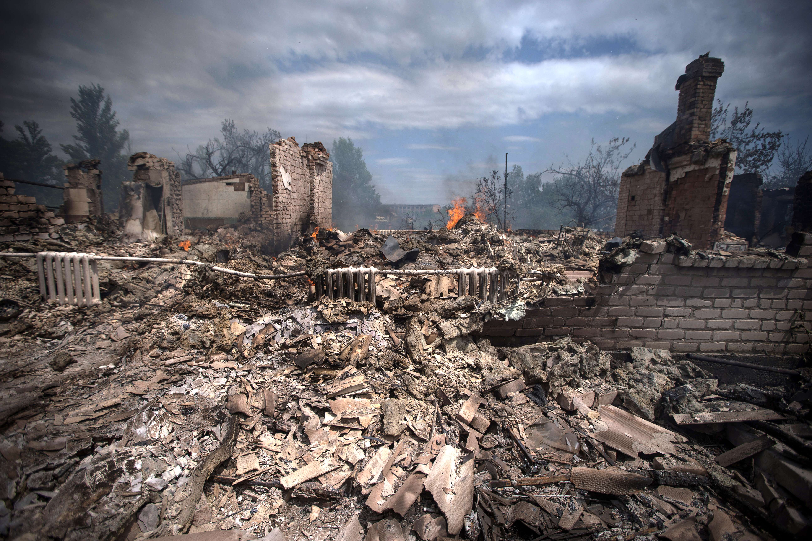

There are many causes that can lead to homelessness. Loss of loved ones, divorce, domestic Violence, job loss and family disputes. Also impairments can cause homelessness as well such as untreated mental illnesses, physical disorders, and depression.
Divorce has a lot of costs that can effect your income and cause you to go into debt increasing chance to become homeless. Serious illnesses can cause bills to stack up and cause a family to become homeless. An accident causing someone to be unable to work can cause them to go into debt and lose their house.
Job loss can happen unexpectedly and could be hard to find work this can cause their financial situation to decline and end in the loss of their house.
Someone with a lower income and are living close to the poverty line have a bigger risk of becoming homeless. A few set backs or unexpected bills could send that person into downward spiral of bills that might not be easy to recover from. This could cause homelessness from everyday issues that people run into.
Natural disasters can destroy your home or cause costly repairs that might not be able to be fixed. A big example of a natural disaster that caused alot of people to be homelessness would be Hurricane Katrina.
Some of the challenges faced by a person new to homelessness would be how to try to get back on their feet. What steps to take and where to go to find help.
